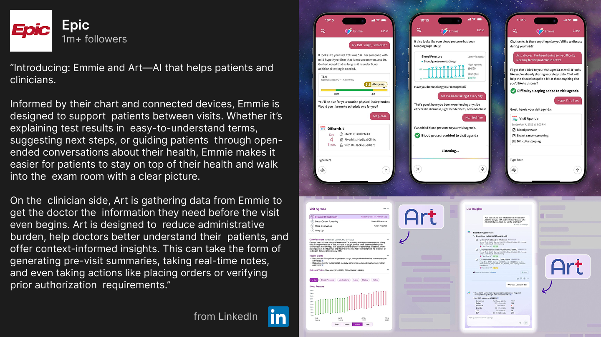

Overview
I designed the North Star vision for a streamlined office visit, aiming to unify Epic’s various AI tools into one workflow. By mapping the journey from a patient’s pre-visit prep to a physician’s post-visit documentation, I created an experience where AI acts as an intelligent partner that listens to the conversation, surfaces relevant data, and queues actions for review. This blueprint was designed to minimize software interaction, allowing doctors to spend less time on screens and more time focused on the patient.
The Problem
As AI tools were developed across Epic, the clinical experience risked becoming fragmented. The main challenges were:
-
Disconnected Toolsets: Separate product teams were innovating AI features in isolation, lacking a shared narrative.
-
Lack of Shared Context: There was no framework for how patients and providers could align on visit goals before meeting, which often led to disjointed conversations and wasted time during the appointment.
Iteration
I incorporated feedback from developers and clinicians to shape the narrative, ensuring the proposed workflow was technically feasible and provided real clinical value. Through multiple sessions and iterations, I integrated existing and emerging projects into a single, logical flow. This vision was presented at one of Epic’s clinical conferences, XGM, and to R&D leadership.
Design & Outcomes
-
Cross-Team Alignment: My plan served as a shared reference point that helped different product groups align their work, bridging the gap between siloed development and a unified experience.
-
Streamlined Decision Support: I mapped a future state where the system drafts actions for the doctor to review, removing the need for manual data entry while keeping the clinician in total control of the record.
-
Strategic Blueprint & Handoff: My work established the foundational roadmap for clinical AI workflows, providing the Ambulatory and MyChart teams a clear roadmap to follow. This framework directly informed the development of Epic’s AI assistants, Art and Emmie.
